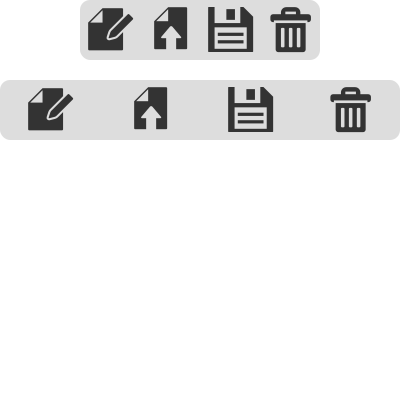

LOL. Y éste quien es?
Agenda
No hay agenda.
Status del API
CSS para Web Apps
Confirmado
Floats, Tablas, & Posicionamiento... =/
- Los Floats se acomodan horizontalmente y permiten un posicionamiento simple.
- Tablas carecen de de repetibilidad y sentido semántico.
- Usar posicionamiento absoluto es complicado. Y no se lleva bien con la adaptabilidad.
- La especifícación de CSS3 toma en cuenta los layout con regions, exclusiones, grids y flexible box.
Specs de CSS para Web Apps
CSS Flexible Box Module
Layout for web apps
- Box model optimized for user interface design
- Children can "flex" their sizes: fill unused space / shrink to avoid overflow
- Source-ordering independence: children can be laid out in any direction
- Enabled by
display:anddisplay: - Note: Replacing old flex box
display:
That's all great...
Por qué Flexbox es tan bueno?
Layout "Holy Grail"
(santos griales batman!)
Alineamiento
Centrar verticalmente es más fácil que nunca!
.box {
display: ;
: ;
: ;
}
Orden y Orientación
- El contenido se presenta de menor a mayor.
- Los elementos con el mismo valor se acomodan según el orden en el documento.
.box {
: ;
}
.box > :nth-child(2) {
: ;
}
UIs!
Ejemplo: Distribuir los íconos de un toolbar de acuerdo al tamaño del device:

Columnas de la misma altura!
Flexibilidad
- Los elementos en un Flexbox alteran su altura y ancho para llenar el espacio disponible.
- También crecen y encogen proporcionalmente a su flexibilidad negativa o positiva.
- El tercer argumento es tamaño preferible.
.box > * {
: 1 0 0px;
}
.box > :nth-child(2) {
: px;
}
Demo: Layout Holy Grail
Soporte en Browsers
CSS Flexbox
CSS Dinámico
Confirmado
New CSS Functions
calc()
width: (200px - 100); width: (2 * 50%); width: (200px / 2); color: hsl((120), (75%), 0.5); background-position: (50% + 5px) center;
min()
width: (150px, 100px, 200px); width: (90px + 50px, 100px); width: (100px, 100%); /* where 100% is 200px; */
max()
width: (150px, 100px, 200px); width: (200px - 50px, 100px); width: (100px, 100%); /* where 100% is 200px; */
calc()
.circle {
width: 300px;
height: 300px;
}
div {
display: ;
width: (100% - 4em);
height: (100% - 4em);
border-radius: 50%;
: center;
: center;
}
div:hover {
border-radius: 0;
}
Soporte en Browsers
CSS calc()
CSS Functions ( cont. )
cross-fade()
background-image: (url(first.png), url(second.png), 50%);
@-webkit-keyframes fading {
0% { background-image: (url(first.png), url(second.png), 0%); }
100% { background-image: (url(first.png), url(second.png), 100%); }
}
CSS Filter Effects
Apply filter effects to any DOM element:
video, img {
: grayscale(0.5) blur(10px);
}
- Chrome needs
--enable-acceleratedflag for hardware accelerated content. - Good blog post.
Data binding
Confirmado
Viejo conocido de los frameworks y bibliotecas JS
En Angular ( angularjs.org ):
<div ng-app ng-init="val=25">
Volume: <input type="range" min="0" max="100" ng-model="val">
{{val}}/100
</div>
Data Binding "One-way"...
Con atributos data-*
- Modelo: Atributos data
- Use
attr()para obtener los valores(s) - Vista: mostrar el contenido generado con pseudo elementos
:before/:after - Un listener JS que observa cambios.
Data Binding con attr()
<style>
input::after {
content: attr(data-value) '/' attr(max);
position: relative;
left: 135px; top: -20px;
}
</style>
<input type="range" min="0" max="100" value="25">
<script>
var input = document.querySelector('input');
input.dataset.value = input.value; // Set an initial value.
input.addEventListener('change', function(e) {
this.dataset.value = this.value;
});
</script>
One-way Data Binding con <datalist>
Browsers: <input list="browsers"> <datalist id="browsers"> <option value="Chrome"> <option value="Firefox"> <option value="Internet Explorer"> <option value="Opera"> <option value="Safari"> </datalist>
- Especifica una lista de opciones predeterminada para un elemento <input>.
- El atributo
listhace un "bind" del datalist a un <input> con su id. - Util para "autocompletes" en elementos <input>.
Browsers:
Soporte en Browsers
Data binding with data-* attrs / <datalist>
Acceso al Filesystem
Confirmado
Filesystem API
Persiste data en archivos o folders
Abriendo un filesystem:
window.( TEMPORARY, // persistent vs. temporary storage 1024 * 1024, // size (bytes) of needed space initFs, // success callback opt_errorHandler // opt. error callback, denial of access );
Example: Caching en archivos remotos
var xhr = new XMLHttpRequest();
xhr.open('GET', '/path/to/image.png', true);
xhr.responseType = 'arraybuffer';
xhr.onload = function(e) {
};
xhr.send();
Example: Caching en archivos remotos
var xhr = new XMLHttpRequest();
xhr.open('GET', '/path/to/image.png', true);
xhr.responseType = 'arraybuffer';
xhr.onload = function(e) {
window.(TEMPORARY, 1024 * 1024, function(fs) {
}, onError);
};
xhr.send();
Example: Caching en archivos remotos
var xhr = new XMLHttpRequest();
xhr.open('GET', '/path/to/image.png', true);
xhr.responseType = 'arraybuffer';
xhr.onload = function(e) {
window.(TEMPORARY, 1024 * 1024, function(fs) {
fs.root.getFile('image.png', {create: true}, function(fileEntry) {
}, onError);
}, onError);
};
xhr.send();
Example: Caching en archivos remotos
var xhr = new XMLHttpRequest();
xhr.open('GET', '/path/to/image.png', true);
xhr.responseType = 'arraybuffer';
xhr.onload = function(e) {
window.(TEMPORARY, 1024 * 1024, function(fs) {
fs.root.getFile('image.png', {create: true}, function(fileEntry) {
fileEntry.createWriter(function(writer) {
writer.onwriteend = function(e) { ... };
writer.onerror = function(e) { ... };
writer.write(new Blob([xhr.response], {type: 'image/png'}));
}, onError);
}, onError);
}, onError);
};
xhr.send();
Using Local Assets
- Stored files/folders get their own (
filesystem:) URL:
filesystem:http://example.com/temporary/image.png
- Use for a src/href value:
var img = document.createElement('img');
img.src = fileEntry.toURL();
document.body.appendChild(img);
- Get back to a
FileEntryfrom itsfilesystem:URL:
window.(img.src, function(fileEntry) { ... });
Moar Callbackzzzzzz!
var xhr = new XMLHttpRequest();
xhr.open('GET', '/path/to/image.png', true);
xhr.responseType = 'arraybuffer';
xhr.onload = function(e) {
window.(TEMPORARY, 1024 * 1024, function(fs) {
fs.root.getFile('image.png', {create: true}, function(fileEntry) {
fileEntry.createWriter(function(writer) {
writer.onwriteend = function(e) { ... };
writer.onerror = function(e) { ... };
writer.write(new Blob([xhr.response], {type: 'image/png'}));
}, onError);
}, onError);
}, onError);
};
xhr.send();
filer.js ( github.com/ebidel/filer.js )
Wrapper lib that implements common UNIX cmds (ls, cp, mv)
var filer = new Filer();
filer.init({persistent: false, size: 1024 * 1024}, function(fs) {...}, onError);
filer.ls('path/to/some/dir/', function(entries) { ... }, onError);
filer.cp('file.txt', '/path/to/folder', 'newname.txt', function(entry) {
// entry.fullPath == '/path/to/folder/newname.txt'
}, onError);
var b = new Blob(['body { color: red; }'], {type: 'text/css'});
filer.write('styles.css', {data: b, type: b.type}, function(entry, writer) {
...
}, onError);
Demo: Playground para Filesystem
Soporte en Browsers
HTML5 Filesystem API - thanks to idb.filesystem.js shim!
Descargas en cliente
Confirmado
Descargas en cliente
Forzar descargas con un servidor:
Content-Disposition: attachment; filename="MiLogo.png";
- Necesitamos una forma de descargar datos creados en cliente.
download sirve para descargar recursos en lugar desplegarlos:
<a href="http://www.edify.cr/img/logo_edify.png" download="Logo.png">Descargar</a>
Demo: Generador de Novelas
Example: Descargando un archivo generado
function downloadLink(name, content, mimetype) {
var a = document.createElement('a');
a.href = window.(new Blob([content], {type: mimetype}));
a.download = name;
a.textContent = 'Descarga lista';
document.body.appendChild(a);
}
downloadLink('MyNovel.txt', document.querySelector('textarea').textContent, 'text/plain');
sudo make me a sandwich
BUSTED
Transferir Datos Eficientemente
Confirmado
Evolución de postMessage()
Evolución de postMessage()
1. Strings
worker.postMessage('Hola Barcamp');
window.postMessage(JSON.stringify({msg: 'Hola Barcamp'}), '*');
2. JSON
worker.postMessage({msg: 'No strings attached!!... wat.'});
Evolución de postMessage()
3. Tipos complejos (File, Blob, ArrayBuffer) usando structured cloning
var data = [1, 2, 3, 4];
// Blob() desde Chrome 20, FF 13
worker.postMessage(new Blob(data.toString(), {type: 'text/plain'}));
var uint8Array = new Uint8Array(data);
worker.postMessage(uint8Array);
worker.postMessage(uint8Array.buffer);
- Problema: Todos estos métodos crean copias. No son eficientes!
- Pero también existe...
Objetos transferibles
a.k.a. workers que no apestan
Misma cosa, semántica diferente (vendor prefix):
worker.(arrayBuffer, [arrayBuffer]); window.(arrayBuffer, targetOrigin, [arrayBuffer]);
- Zero-copy
- El
ArrayBufferes transferido a un nuevo contexto (e.g. worker/window). - ~50x más rápido que structured cloning (Chrome 13/FF).
- El
- El segundo argumento es la lista de lo que se va a transferir.
Examples
var uint8Array = new Uint8Array(1024 * 1024 * 32); // 32MB
// Fill'r up!
for (var i = 0, len = uint8Array.length; i < len; ++i) {
uint8Array[i] = i;
}
worker.(uint8Array, [uint8Array.buffer]);
Pass multiple buffers at once and/or additional data:
worker.({
view1: uInt8Array,
buffer2: anotherBuffer,
username: 'johndoe'
}, [uInt8Array.buffer, anotherBuffer]);
Demo: Objetos transferibles
Feature Detection
- Feature detecting is a PITA b/c of false positives.
- If transferred, buffer's
.byteLengthgoes to zero.
var ab = new ArrayBuffer(1);
worker.(ab, [ab]);
if (ab.byteLength) {
alert('Transferables are not supported in your browser!');
} else {
// Transferables are supported.
}
Soporte en Browsers
Transferable Objects
Acceso Nativo a Hardware
Confirmado
"Device APIs"
Device APIs WG: www.w3.org/2009/dap/
- Geolocation API
- Device Orientation API ( accelerometer )
- WebGL ( GPU )
- HTML5 Filesystem API ( sandboxed filesystem )
navigator.onLine/navigator.connection( network connectivity )- Battery API
- Gamepad API
- WebRTC ( voice & video input ) / Web Audio API ( core audio )
Reconocimiento de voz!!
var recognition = new webkitSpeechRecognition();
recognition.interimResults = true;
recognition.lang = "es-CR";
recognition.onresult = function(event) {
var interim_transcript = '', final_transcript = '';
for (var i = event.resultIndex; i < event.results.length; ++i) {
if (event.results[i].isFinal) {
final_transcript += event.results[i][0].transcript;
} else {
interim_transcript += event.results[i][0].transcript;
}
}
input.value = final_transcript;
}
recognition.start();
Acceso a Camara y Micrófono
Sin plugins!.
navigator.({audio: true, video: true}, function(stream) {
var video = document.querySelector('video');
video.src = window.(stream);
}, function(e) {
console.log(e);
});
<video autoplay controls></video>
Demos
Grabar Audio
<input type="button" value="⚫" onclick="record(this)"> <input type="button" value="◼" onclick="stop(this)">
var localMediaStream, recorder;
var record = function(button) {
recorder = localMediaStream.record();
};
var stop = function(button) {
localMediaStream.stop();
recorder.getRecordedData(function(blob) {
// Upload blob using XHR2.
});
};
Soporte en Browsers
getUserMedia()
<audio> cool nuevamente
Confirmado
Demo: Visualizador de <audio>
Web Audio API + <audio>/<video>
Usa un HTMLMediaElement como el la fuente del API:
var ctx = new window.(); var audioElement = new Audio(); audioElement.src = 'sounds/dope_beats.mp3'; audioElement.controls = true; audioElement.autoplay = true; var source = ctx.createMediaElementSource(audioElement); var analyser = ctx.createAnalyser(); source.connect(analyser); analyser.connect(ctx.destination);
Play/pause es controlado por el elemento <audio>.
Streams de Multimedia
Confirmado
Binary WebSockets
Nuevo look, igual de útil
- WebSockets sufrían las mismas limitaciones de los Workers.
- Ahora envia tipos
File,Blob, oArrayBuffer.
var socket = new WebSocket('ws://example.com/sock', ['dumby-protocol']);
socket.binaryType = 'blob'; // o 'arraybuffer'
socket.onopen = function(e) {
window.setInterval(function() {
if (socket.bufferedAmount == 0) {
socket.send(new Blob([blob1, blob2]));
}
}, 50);
};
socket.onmessage = function(e) {
document.querySelector('img').src = (e.data);
};
Demos: Streams de Multimedia
Soporte en Browsers
Finito, Done, Listo, ljúka...
La web puede hacer cosas grandiosas...
Depende de nosotros explotar ese potencial.
< Gracias! />